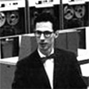
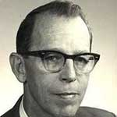
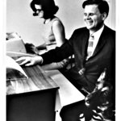
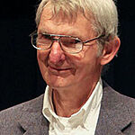
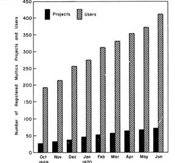

| TYPE | YEAR | LSTYLE | HEIGHT | TEXT | TSTYLE |
|---|---|---|---|---|---|
| back | 1961 | #dddddd | 1966 | 7094 | |
| back | 1966 | #ddddff | 1973 | GE 645 | |
| back | 1973 | #ffdddd | 1978 | H 6180 | |
| back | 1978 | #ddffdd | 1982 | L 68 | |
| back | 1982 | #ddffff | 1987 | DPS-8/M | |
| back | 1987 | #eeeeee | 2000 | endgame | |
| axis | 1960 | ||||
| axis | 1965 | ||||
| axis | 1975 | ||||
| axis | 1985 | ||||
| axis | 1995 | ||||
| axis | 2000 | ||||
| axis | 2010 | ||||
| axis | 2020 | ||||
| axis | 2030 | ||||
| data | 1961 | 1 | (CTSS) | italic 9pt serif | |
| data | 1965 | 2 | FJCC|Papers | ||
| data | 1968 | 4 | system|up at MIT | ||
| data | 1970 | 6 | Honeywell | ||
| data | 1972 | 1 | 6180 | ||
| data | 1973 | 2 | AFDSC | ||
| data | 1976 | 3 | NSS, AIM | ||
| data | 1978 | 4 | Guardian | ||
| data | 1985 | 1 | B2 | ||
| data | 1986 | 2 | Multics|canceled|by Bull | bold 10pt serif | |
| data | 1998 | 1 | DOCKMASTER|shut down | ||
| data | 2000 | 3 | DND-H|shut down|(last site) | ||
| data | 2007 | 1 | Open|Source|by|Bull | ||
| data | 2014 | 2 | Multics|Simulator |
See the Site Timeline for a chart of Multics sites by date.
For a list of significant Multics dates, see the Multics Chronology.
A 1989 ACM talk by John Gintell on Multics history is  available on YouTube and
the slides are available as a PDF.
available on YouTube and
the slides are available as a PDF.
Introduction
Multics (Multiplexed Information and Computing Service) is a mainframe time-sharing operating system begun in 1965 and used until 2000. It was designed to be a prototype computer utility system that would serve the computing needs of many different users with different goals.
"Multiplexed" explicitly referred to the design practice of serially sharing access to hardware and software resources among users, to take advantage of "economies of scale:" per-system overheads could be spread over multiple users. This approach led to the design of an operating system that shared machine resources efficiently and provided a rich set of software features and programming tools in order to reduce users' cost of program development and maintenance.
A simulator for the Multics computer is available for download. The simulator can be installed on modern Unix, macOS, and Windows computers. There are public simulator sites offering Multics accounts.
1. Summary of Multics
Multics design was started in 1965 as a joint project by MIT's Project MAC, Bell Telephone Laboratories, and General Electric Company's Large Computer Products Division. Professor Fernando J. Corbató of MIT led the project. Bell Labs withdrew from the development effort in 1969. In 1970 GE sold its computer business to Honeywell, which offered Multics as a commercial product and sold dozens of systems, until its cancellation in 1985.
Multics included
- a supervisor program that managed all hardware resources, using symmetric multiprocessing, multiprogramming, and paging
- an innovative segmented memory addressing system supported by hardware
- a tree structured file system
- device support for peripherals and terminals
- hundreds of command programs, including language compilers and tools
- hundreds of user-callable library routines
- operational and support tools
- user and system documentation
The design team's intention was that Multics would develop into a prototype information utility,
as described in MIT Prof. Martin Greenberger's 1964 Atlantic Monthly article,  "The Computers of Tomorrow".
As part of this vision, Multics was intended to provide interactive access to many remote terminal users simultaneously,
in a manner similar to MIT's CTSS system.
Multics combined ideas from other operating systems with new innovations.
Security was a fundamental design requirement, in order to meet the utility goals.
The team's ambition was that Multics would change the way people used and programmed computers.
"The Computers of Tomorrow".
As part of this vision, Multics was intended to provide interactive access to many remote terminal users simultaneously,
in a manner similar to MIT's CTSS system.
Multics combined ideas from other operating systems with new innovations.
Security was a fundamental design requirement, in order to meet the utility goals.
The team's ambition was that Multics would change the way people used and programmed computers.
Multics was introduced in a series of papers at the 1965 Fall Joint Computer Conference:
- "Introduction and Overview of the Multics System," F. J. Corbató and V. A. Vyssotsky
- "System Design of a Computer for Time-Sharing Applications," E. L. Glaser, J. F. Couleur, and G. A. Oliver
- "Structure of the Multics Supervisor," V. A. Vyssotsky, F. J. Corbató, and R. M. Graham
- "A General Purpose File System for Secondary Storage," R. C. Daley and P. G. Neumann
- "Communications and Input/Output Switching in a Multiplex Computing System." J. F. Ossanna, L. Mikus, and S. D. Dunten
- "Some Thoughts About the Social Implications of Accessible Computing," E. E. David, Jr. and R. M. Fano
Many books and papers describe aspects of Multics.
Multics ran on specialized expensive mainframe hardware whose CPU provided a segmented, paged, ring-structured virtual memory. The supervisor implemented symmetric multiprocessing with shared physical and virtual memory. Standard Honeywell mainframe peripherals and memory were used. The operating system was programmed in PL/I.
Elliott Organick's book, The Multics System, an Examination of its Structure,
describes Multics as it was in about 1968.
 Organick was a the author of a well-regarded guide to FORTRAN who worked with the Project MAC Multics developers to describe the system.
Organick was a professor at the University of Utah, who visited Project MAC for about a year.
He had an office on the 5th floor and access to the MSPM and other Multics documents as they were written,
attended staff meetings, and met with the MIT designers and programmers.
Organick was a the author of a well-regarded guide to FORTRAN who worked with the Project MAC Multics developers to describe the system.
Organick was a professor at the University of Utah, who visited Project MAC for about a year.
He had an office on the 5th floor and access to the MSPM and other Multics documents as they were written,
attended staff meetings, and met with the MIT designers and programmers.
MIT started providing time-sharing service on Multics to users in fall of 1969. GE sold the next system to the US Air Force, and the military use of Multics led to some of the system's security features. Honeywell sold more systems to government, and to auto makers, universities, and commercial data processing services.
In the 1980s, Multics became popular in France; Honeywell's partner Bull sold a total of 31 French Multics sites.
Honeywell decided not to create a new hardware generation for Multics in the mid-80s and stopped developing the operating system. In 1987, Honeywell Bull also chose not to build new Multics hardware, and customer sites replaced their Multics systems with more modern hardware. MIT's Multics system was shut down in January, 1988.
The last running Multics site, the Canadian National Defence site at Halifax, NS, shut down at the end of October 2000.
1.1. Goals
As described in the 1965 paper Introduction and Overview of the Multics System by Corbató and Vyssotsky, there were nine major goals for Multics:
- Convenient remote terminal use.
- Continuous operation analogous to power & telephone services.
- A wide range of system configurations, changeable without system or user program reorganization.
- A high reliability internal file system.
- Support for selective information sharing.
- Hierarchical structures of information for system administration and decentralization of user activities.
- Support for a wide range of applications.
- Support for multiple programming environments & human interfaces.
- The ability to evolve the system with changes in technology and in user aspirations.
1.2. Notable features
See Multics Features for more information.
1.2.1. Segmented memory
The Multics memory architecture divides memory into segments. User programs address segments directly; segments may be shared between different processes' address spaces. Each segment has addresses from 0 to 256K words (1 MB). The file system is integrated with the memory access system so that programs access files by making memory references.
1.2.2. Virtual memory
Multics uses paged memory in the manner pioneered by the Atlas system. Addresses generated by the CPU are translated by hardware from a virtual address to a real address. A hierarchical three-level scheme, using main storage, paging device, and disk, provides transparent access to the virtual memory. (Both the Ferranti Atlas and the Burroughs B5000 had previously provided virtual memory.)
1.2.3. High-level language implementation
Multics was written in the PL/I language, which was, in 1965, a new proposal by IBM. (Doug McIlroy of BTL participated in the design of the language.) Only a small part of the operating system was implemented in assembly language. Writing an OS in a high-level language was still a radical idea at the time, even though Burroughs had done it for the B5000.
1.2.4. Shared memory symmetric multiprocessor
The Multics hardware architecture supports multiple CPUs sharing the same physical memory. All processors are equivalent.
1.2.5. Multi-language support
In addition to PL/I, Multics supports BCPL, BASIC, APL, FORTRAN, LISP, SNOBOL, C, COBOL, ALGOL 68 and Pascal. Routines in these languages can call each other.
1.2.6. Relational database
Multics provided the first commercial relational database product, the Multics Relational Data Store (MRDS), in 1978.
1.2.7. Security
Multics was designed to be secure from the beginning. In the 1980s, the system was awarded the B2 security rating by the US government NCSC, the first (and for years only) system to get a B2 rating.
1.2.8. On-line reconfiguration
As part of its computer utility orientation, Multics was designed to be able to run 7 days a week, 24 hours a day. CPUs, memory, I/O controllers, and disk drives can be added to and removed from a Multics site's configuration while the system is running.
1.2.9. Software Engineering
The development team spent significant effort finding ways to build Multics in a disciplined way. The Multics System Programmer's Manual (MSPM) was written before implementation started: it was 3000 or so pages and filled about 4 feet of shelf space in looseleaf binders. (Clingen and Corbató mention that we couldn't have built Multics without the invention of the photocopier.) High level language, design and code review, structured programming, modularization and layering were all employed extensively to manage the complexity of Multics, which was one of the largest software development efforts of its day.
1.2.10. Hardware
In the mid 1960s, the fastest and most powerful computers were expensive mainframes. Designers believed that the "economices of scale" of large installations would provide the best computing to the most computer users. To share this power efficiently among many users required innovations in hardware and software design and implementation.
The GE-645 installation that Multics was implemented on occupied as much space as an average home, cost millions of dollars, and ran at 435 KIPS.
(Less than 20 years later, the IBM PC ran about 4000 times as fast, cost about 1000 times less, and fit on a desktop.)
In the mid 1970s, Honeywell hardware designers replaced the GE 645 CPU architecture with a new system, the 6180, with faster processors, faster memory, and improvements to the instruction set. These systems made Multics run much faster and support more users. Several generations of DPS8 software were created in the 70s, each providing performance improvements. The DPS-8/70 M was announced in December 1980.
2. Inception
2.0.1 Predecessors
Computers
During World War II, the MIT Servomechanisms Laboratory of the MIT Research Laboratory of Electronics
developed a prototype computer called  Whirlwind to be used as a flight simulator.
Whirlwind became the foundation for the
Whirlwind to be used as a flight simulator.
Whirlwind became the foundation for the  SAGE air defense system developed at MIT Lincoln Laboratory in the 1950s.
The SAGE project led to innovations in computer processors and memory, telecommunications, programming, management, and simulation,
as well as fundamental programming concepts.
SAGE air defense system developed at MIT Lincoln Laboratory in the 1950s.
The SAGE project led to innovations in computer processors and memory, telecommunications, programming, management, and simulation,
as well as fundamental programming concepts.
Operating Systems
Early computer systems like  Whirlwind and
Whirlwind and  TX-0 gave complete control of the computer and all peripherals to one user at a time.
TX-0 gave complete control of the computer and all peripherals to one user at a time.
 "Batch processing" introduced the role of computer operator, who ran a sequence of jobs for users from a queue.
"Batch processing" introduced the role of computer operator, who ran a sequence of jobs for users from a queue.
In the 1950s, "operating systems" were introduced to automatically run batch job sequences on computer systems. Operating systems, sometimes called "supervisor programs," managed a system's resources for use by user programs. The introduction of shared hard disk required a change to this approach, since it became necessary to prevent users' files on disk from destruction by errant programs.
In the early 1960s, large-scale computing was dominated by mainframe computers that were controlled by batch processing supervisor programs. Users submitted jobs on punched cards and tape, and received printed output, punched cards, and tape after the job was run.
Time-Sharing Operating Systems and the Information Utility

John Backus first used the term "time-sharing" in 1954 at the MIT computer summer session. [Backus54] Bob Bemer wrote an article describing time-sharing in March 1957 Automatic Control [Bemer57]: "users" would access the machine interactively, on demand, without waiting. John McCarthy wrote, in a 1961 MIT centennial talk, "If computers of the kind I have advocated become the computers of the future, then computing may someday be organized as a public utility just as the telephone system is a public utility....The computer utility could become the basis of a new and important industry." [McC83]
"Conversational" computing, in which a single user typed commands to a computer and saw output immediately, had been done on the RAND Johnniac starting in 1953, and was the standard way of using smaller computers and research machines such as MIT's Whirlwind.
Time-sharing, in which a large machine switched its attention between multiple users, giving each the impression of conversational computing with a "virtual" computer, was proposed in a 1959 paper at a UNESCO congress by Christopher Strachey [Strachey59] and independently proposed by MIT Professor John McCarthy in an internal MIT memo in 1959.
Prof. Fano, in his 1964 proposal to ARPA for Project MAC funding, referred to CTSS as a "community utility... capable of supplying computer power to each customer where, when, and in the amount that he needs it..." [Fano64]
Paging had already been demonstrated on the Atlas system in the early 60s (with 16 pages), and the Burroughs B5000 incorporated segmentation. Ted Glaser had been part of the B5000 design team.
MIT Professor Jack Dennis of MIT contributed influential architectural ideas to the beginning of Multics, especially the idea of combining paging and segmentation. Professor Bob Graham made crucial contributions to the use of segmentation in the run-time environment.
James Pelkey's online book, The History of Computer Communications [Pelkey21], has a comprehensive chapter on the history of time-sharing.
2.1. Beginnings
2.1.1. CTSS

Corby
The Compatible Time-Sharing System (CTSS) was one of the first time-sharing systems.
It was developed at the MIT Computation Center by a team led by Prof. Fernando J. Corbató.
CTSS was first demonstrated in November 1961 on the IBM 709, swapping to tape.
By 1963, CTSS ran on a modified IBM 7094 with a second 32K-word bank of memory,
using two IBM 2301 drums for swapping,
and provided remote access to up to 30 users via an IBM 7750 communications controller connected to dialup modems.
Story:  "The IBM 7094 and CTSS".
"The IBM 7094 and CTSS".
The PLATO system at University of Illinois and Prof. Jack Dennis's PDP-1 time-sharing system at MIT were also demonstrated in 1961. The JOSS system, running on the RAND Johnniac, began operation in 1963.
2.1.2. MIT Project MAC
J. C. R. Licklider
Project MAC was created as an interdepartmental laboratory at MIT, proposed by J. C. R. Licklider of ARPA IPTO and led by MIT Prof. Robert M. Fano. The history of Project MAC is described on a separate page. The Project MAC contract between MIT and ARPA was signed on July 1, 1963.
A consortium of university and commercial researchers interested in time-sharing exchanged design memos
about plans for a future time-sharing system, as described in  postings on the Michigan MTS site.
postings on the Michigan MTS site.
The Project MAC Computer Systems Research Group, led by MIT Prof. Fernando J. Corbató, accounted for about a third of Project MAC's budget; its goal was to design and implement a successor operating system to CTSS.
2.1.3. Selection of Hardware Vendor
(In 1964, IBM had over 60% of the computing market share: GE was known as the "King of the dwarfs" with less than 4% share.)
MAC senior staff and other computer scientists visited computer hardware vendors in 1963 and 1964, and the Multics specifications were developed and sent out to bid.
J. B. Dennis
[Jack Dennis] From fall 1963 until April 1964 four of us (Corbató, Edward L. Glaser, Robert Graham and I (Dennis)) visited the principal main-frame computer vendors (IBM, RCA, Sperry/Rand, Burroughs, GE, Philco, CDC, Cray -- known in those days as "Snow White and the Seven Dwarfs") to see which of them had the ideas and resources to work with Project MAC to build hardware for the Multics system. When we visited GE in Phoenix, met John Couleur and learned about the GE-635, we were very much impressed. That led to the selection of GE (much to the chagrin of IBM, who desperately attempted to change our decision) and the collaboration of John Couleur with Ted Glaser to specify the GE 645 system for Multics.
J. F. Weizenbaum
When it came time to select a vendor for the computer that would support the new OS,
the folklore is that IBM pitched the machine that would become the 360/65.
They were not interested in the MAC team's ideas on paging and segmentation.
Professor Joseph Weizenbaum, then a lecturer at MIT,
introduced the MAC team to former colleagues of his from General Electric Phoenix,
who were receptive and enthusiastic, and proposed what became the GE-645.
DEC also responded to the bid.
The GE proposal was chosen in May 1964 ( much to the surprise and chagrin of IBM) and the contract signed in August 1964.
much to the surprise and chagrin of IBM) and the contract signed in August 1964.
Doug McIlroy posted online:
The Multicians timeline shows Bell Labs joining the project after GE
was chosen as the vendor. This may be the date of some formal
agreement. However, the Labs was in on the final confirmation of GE.
IBM had been ruled out over the issue of virtual memory. GE was happy
to offer a VM variant of the 635. In contrast, IBM's chief architect,
Gene Amdahl, adamantly maintained that VM was unacceptably
inefficient. When it became clear that GE was winning, IBM revealed
Gerrit Blaauw's 360 model 67 with VM, which had been kept under wraps.
The option was considered, but found to offer no advantage from a
programming standpoint. Nevertheless, time-sharing on the IBM machine
made it into the field well before Multics; MTS, the Michigan Terminal
System, went live in 1967. the same year that GE delivered the 645.
See Doug's 1999 retirement talk,  Computing History at Bell Labs.
Computing History at Bell Labs.
The Multics Design Notebook, written in 1964 and 1965, was distributed to time-sharing researchers at MIT, Bell Laboratories, GE, University of Michigan, and Carnegie Tech. It described Project MAC's plans for Multics.
2.1.3.1 GE-645
The GE-645 was an enhanced version of the commercial GE-635, which in turn was a descendant of the GE M236 minicomputer that GE Syracuse had supplied to the US Air Force for the MISTRAM missile tracking system in the early 60s.
[Kazumasa Mine]
At that time, John F. Couleur was responsible for General Electric's 600 product lines.
Couleur co-operated with Edward L. Glaser of MIT on the design of the 645,
adding paging, segmentation,
associative memories or translation look-aside buffers (US Patent 3,412,382),
and various functions MIT required, to the base GE-635.
Nowadays, almost all computers supporting virtual memory have a TLB in their Memory Management Unit.
Couleur's recollections are in  The Core of the Black Canyon Computer Corporation, IEEE Annals of the History of Computing Vol. 17, No. 4: Winter 1995, pp. 56-60.
The Core of the Black Canyon Computer Corporation, IEEE Annals of the History of Computing Vol. 17, No. 4: Winter 1995, pp. 56-60.
The GE-645 added a new paged addressing mode to the GE-635, new "base registers", segmentation and the Descriptor Segment Base register, associative memory, and additional instructions to manage these features. There was also a new I/O controller, the General I/O Controller.
The family tree of GE and Honeywell large-scale computers is described in Jane King and Bill Shelly's article A Family History of Honeywell's Large-Scale Computer Systems, IEEE Annals of the History of Computing Vol. 19, No. 4, October/ December 1997.
The GE-645 had a 36-bit word and a speed of about 435 KIPS.
2.1.4. MIT, Bell Labs, GE Cooperation
Bell Laboratories (BTL) joined the Multics software development effort in November of 1964 and decided to obtain a GE-645. GE also agreed to contribute software development manpower as well as hardware system engineering. The three organizations worked out a structure for cooperation. The Trinity made major policy decisions. There was one person from each organization:

C. W. Dix

E. E. David

R. M. Fano
- Robert M. Fano (MIT)
- Edward E. David (BTL)
- John Weil, then Eugene White, then C. Walker Dix (GE).
The Triumvirate was in charge of actual management of the implementation. Membership changed over the years. The initial composition was
V. L. Vyssotsky

E. R. Vance

F. J. Corbató
- Fernando J. Corbató (MIT)
- Ed Vance (GE)
- Vic Vyssotsky (BTL).
Developers from Project MAC and GE/Honeywell met weekly for a staff meeting led by Prof. Corbató, which reviewed short term accomplishments and goals, and included a presentation on a current project or development issue.
The final composition of the Triumvirate was

P. G. Neumann
- Fernando J. Corbató (MIT)
- A. L. Dean (GE)
- Peter G. Neumann (BTL).
.. until Bell labs dropped out in 1969 and GE sold its computer operations to Honeywell ("the merger").

E. L. Glaser

J. H. Saltzer
MIT Professors Jerome H. Saltzer and Edward L. Glaser were consultants to the triumvirate.
Ted Glaser left MIT in 1967 for Case Western Reserve University.
Project MAC was housed in the 545 Technology Square office building across from the MIT campus. The Computer Systems Research group had offices on the 5th floor, administration was on the 8th floor, and the 9th floor had a large computer room, initially used for an IBM 7094 that ran CTSS.
Bell Laboratories personnel worked on Multics from their locations in New Jersey, dialing into the Project MAC CTSS system over 110 to 150 baud phone lines. Most of the Bell folks were located in Murray Hill NJ, with a few in each of Holmdel NJ and Whippany NJ.
General Electric obtained office space in 545 Technology Square for a programming team, called the Cambridge Information Systems Laboratory (CISL). Al Dean led this group. CISL was initially located on the 7th floor of Tech Square. The CISL people connected to CTSS using MIT's internal telephone network. GE hardware engineering was located in Phoenix, AZ, along with Ed Vance and his management.
| Organization | Goals | People | Documents |
|---|---|---|---|
| MIT Project MAC | Advance the state of the art in computer operating systems; build an "information utility." | 50 | MDN, MSPM, MPM, MCBs, Repository |
| Bell Telephone Laboratories | Obtain an advanced tool for computer science research | 20 | MDN, MSPM, MCBs, Repository |
| GE/Bull/Honeywell | Profit, lead the industry | 40 | MDN, MSPM, MPM, MCBs, Repository, engineering drawings |
We don't have good figures for the budgets of the three organizations. Project MAC got about $3-4M/yr from ARPA in the early years, mostly spent on Multics; some on CTSS.
Numbers of people are very approximate. Many individuals were part-time.
2.1.5. Multics Papers at the 1965 Fall Joint Computer Conference
The lead technical people from the three organizations initiated the design of Multics.
Conference papers describing Multics were presented at a special session at the 1965 Fall Joint Computer Conference (FJCC). At the time, some people thought the system's goals were too ambitious, and that it couldn't be built, for example H. R. J. Grosch, in DATAMATION, November 1, 1971:
Inspect now the far end, the impossible end, of the feasibility spectrum. Here we find that hecatomb called SAGE, and the other (all the other) command and control projects. We find the great corporate MIS systems-the automated board room, the self-optimizing model, the realistic management game. And, pardon my chuckles, if we turn over a few flat stones we may even find MULTICS.
Other contemporary computer scientists argued against the idea of writing a system in a high level language, or with the use of virtual memory, on the grounds of inefficiency.
2.2. Initial Construction of Multics
 Professor Fano's initial goal for the project was to have a usable Multics system running by the end of 1965, but this didn't happen.
The GE-645 encountered design and production delays and was not delivered to Project MAC until 1967.
Professor Fano's initial goal for the project was to have a usable Multics system running by the end of 1965, but this didn't happen.
The GE-645 encountered design and production delays and was not delivered to Project MAC until 1967.
A GE-635 was delivered to Project MAC in August 1965 for use running the 645 simulator. The simulator was called the 6.36 because it was 100 times as slow as the promised "GE 636," the initial name for the 645. Intense software development efforts to design and build Multics began in 1965, led by Corby and Bob Daley at Project MAC. The development team used the Project MAC CTSS system for file editing, file storage, and cross-compilation. They submitted 645 simulator runs from CTSS which were run under batch mode under GECOS on the 635.
CTSS had been built using the existing tool chain for the Fortran Monitor System batch environment: the FAP assembler, BSS loader, object format, and subroutine linkage conventions. The Multics design started from scratch for all formats, conventions, and tools. In addition, the character set chosen for Multics was ASCII, differing from both the IBM BCD used by CTSS, and the GE BCD used by GECOS.
2.2.1 PL/I Compiler Development
IBM's proposed PL/I language was chosen as the programming language for Multics in 1964.

Doug McIlroy
In 1965, Bell Labs contracted with Digitek, a software house with experience in compilers, to produce a PL/I compiler for Multics. When it became clear that this project was going to fail, Doug McIlroy and Bob Morris of Bell Labs produced a 'quick and dirty' TMG-based compiler for EPL (Early PL/I), a subset of the full PL/I language. This compiler was written using Prof. Bob McClure's TMG language framework. It ran on CTSS and also under GECOS on the 635. The EPL compiler produced assembly language which was processed by the EPLBSA assembler, created by MIT Prof. Bill Poduska. Developing this compiler and learning to use it contributed to further delay.
The EPL compiler was very slow, and produced inefficient code for some statements: programs had to be restricted to a a subset, REPL, of the language. In 1968, the GE team began work on a PL/I compiler written in PL/I, "version 1 PL/I".
2.2.2 GE-645 Hardware Delivery
The GE-645 was delivered late: it was planned for 1965, and GE announced it in Fall 1965 and then withdrew it in 1966.
There were serious problems with the GE 600 line in 1966 and 1967.
John Weil testified that the 645 was in the "research project phase" until 1969 or 1970. [CRA80]
John Weil was replaced by Eugene White; responsibility for 645 development was moved from Phoenix to Syracuse under Walker Dix.
See J.A.N. Lee's  The Rise and Fall of the General Electric Corporation Computer Department.
The GE-645 was delivered to Project MAC in January 1967, later than planned.
The Bell Labs GE-645 was installed in Murray Hill later in 1967.
The Rise and Fall of the General Electric Corporation Computer Department.
The GE-645 was delivered to Project MAC in January 1967, later than planned.
The Bell Labs GE-645 was installed in Murray Hill later in 1967.
Once the 645 was in place, a revised 645 simulator, still running under GECOS, was used to execute the first major development milestone in June 1967, "Phase .5," which executed an initial version of the Multics file system, including paging and segmentation.
The "Phase One" milestone demonstrated native bootload of Multics on the Project MAC GE-645 and single-process execution in December 1967, and multi-process execution was demonstrated a few months later. This milestone used the Multics shell to execute Multics commands written in PL/I. The process input and output were on a dialup terminal.
The "A3" milestone in March 1968 demonstrated multiprocessing and multiprogramming, with several user processes executing commands from dialup terminals. Access control was integrated into the file system and demonstrated in a milestone accomplished May 1968. By October 1969, we accomplished the "Demonstrable Initial Multics" milestone with 8 users, and the "Limited Initial Multics" in January 1969.
These milestones represented the integration of many software components: memory management including paging, segmentation, and rings; file system including disk management; process creation, scheduling, and interrupt handling; terminal I/O; and user address space organization, command shell, and dynamic linking. Inadequate performance and frequent system crashes required the Multics team to spend unplanned effort improving the system design during 1968 and 1969.
2.2.3 Multics on the GE-645
Multics was self hosting, able to compile itself on Multics using bootstrapped compilers, by the end of 1968. All Multics development by Project MAC and GE users moved from CTSS to Multics during 1969. Non-developer users began using Multics on a regular basis in July 1969, and MIT's Information Processing Center began providing Multics as a service in October 1969. EPL was replaced by a native compiler, Multics version 1 PL/I, in late 1969; recompiling the system in v1pl1 produced noticeable performance improvements.
By mid-1971, MIT IPC revenue from Multics passed the break-even point and began to repay startup investment. Revenue from paying customers exceeded that of each of the other three major computer systems at M.I.T. (a 360/65 running OS/MVT, a 360/67 running CP/67 and a 7094 running CTSS). In addition to the 700 registered users, some 700 students used the SIPB limited service system.
Two interesting and candid papers describe the difficulties we encountered while building Multics. "Multics -- the First Seven Years", by Corbató, Saltzer, and Clingen, describes problems we encountered and lessons learned. "A Managerial View of the Multics System Development", by Corbató and Clingen, describes the major problems faced by the management team, the approaches to solving the problem, and some lessons we learned. The Multics team evolved a unique development process that emphasized peer review.
2.2.4. The Multics System Programmer's Manual (MSPM)

In 1965 and 1966, while waiting for the PL/I compiler to become available, the MAC, GE, and BTL development team wrote the Multics System Programmer's Manual (MSPM). Every section went through serious peer review and many sections were rewritten or deeply revised several times.
The MSPM contained functional requirements, high-level design, and implementation plans for Multics. When we actually started building and integrating the system, we discovered that some of the MSPM designs were far too complex. Simpler, more efficient facilities were built instead, sometimes as interim measures intended to evolve into the full design eventually, and sometimes as recognition that the original plan attempted too much. The MSPM was updated to reflect some of the early redesigns, but quickly got behind. We did try to keep a particular section up to date, the one that documented the system module interfaces, i.e. the code that was actually in Multics. The focus of writing effort switched to end-user documentation needed by early users.
See Development Documentation for a description of the documents produced during development.
2.2.5. Saving Multics from Cancellation
In 1968-69 Multics was late and under significant financial pressure and threat of cancellation. A review by a select ARPA committee in 1968 was one time Multics came close to cancellation; the committee recommended that development continue. The late Prof. Ed Fredkin sent a recollection in January 2004:

Ed Fredkin
Professor Licklider, then the director of Project MAC, asked to see me. He told me, confidentially, that ARPA wanted to stop funding Multics. Licklider felt that there needed to be a graceful way for MIT to come to the conclusion, on its own, that the Multics project should be scrapped. I was sympathetic to Lick's position. He suggested to me that I serve on a committee which would study the state of the Multics project and which would obviously come to the conclusion that the best course of action was to terminate the project. I agreed.
So the committee was formed and it met at MIT's Project MAC. We decided to have the key Multics figures, Professors Corbató and Saltzer (and, to my recollection, others) explain both the state of Multics and the state of the implementation project. It seemed to me, from their behavior, that it was obvious to them that the project was likely to be terminated. As this process started there was no doubt in my mind that the committee would come to the conclusion that Lick expected. As I listened to the Multics story I was impressed by 2 things: the fantastic accomplishments of the Multics team, and the miserably poor telling of it. Corby, so much under the gun to get the next set of things done, spoke mainly about the things they were urgently working on that month (or that week)!
While I felt that the rest of the committee was leaning towards recommending termination, I began to realize that killing off Multics was a terrible idea. My reasoning was as follows: While the Multics project might have been overly ambitious, it was the sole embodiment a great number of very important ideas. The current efforts were taking advantage of lessons learned; knowledge and experience available nowhere else on the planet. If we killed off Multics, it was likely that these ideas would become lost art and would be discredited along with the whole Multics project; all to the possible detriment of many future projects. I decided that the committee had to come to the opposite conclusion to the one that Lick expected.
I was so certain that my new position was correct, that I planned and contrived to do the following: figure out exactly how it could be arranged so that the committee as a whole would decide in favor of continuing Multics. Was I manipulative? I don't remember the details but the answer is "Probably".
[THVV] (Who was on this committee besides Larry Roberts, Butler Lampson, Ed Fredkin, and Dave Evans?) See Multics -- the First Seven Years and A Managerial View of the Multics System Development.
2.2.6. Bell labs withdraws (4/1969)
Bell Labs chose to withdraw from the Multics project in April 1969. Their goal in joining was to obtain a time-sharing system for use by members of the technical staff at Bell Labs. When the planned time had passed, Multics was not ready to use, and it was clear that there was much more work to do. Bell was paying rent on its GE-645 and dedicating valuable people to the Multics effort, and continuing would prolong these costs with no trustworthy end date. (DATAMATION column from 1969).
"Over time, hope was replaced by frustration as the group effort initially failed to produce an economically useful system.
Bell Labs withdrew from the effort in 1969 but a small band of users at Bell Labs Computing Science Research Center in Murray Hill
-- Ken Thompson, Dennis Ritchie, Doug McIlroy, and J. F. Ossanna -- continued to seek the Holy Grail." --  Lucent web page
Lucent web page
"... the problem was the increasing obviousness of the failure of Multics to deliver promptly any sort of usable system,
let alone the panacea envisioned earlier." -- Dennis Ritchie,  "The Evolution of the Unix Time-sharing System"
"The Evolution of the Unix Time-sharing System"
News brief from Datamation, sometime in 1969. (Thanks to Jerry Saltzer.)
Ken, Dennis, Doug, Joe, and other BTL folks went on to create Unix in the 1970s.
2.3. Multics Use at MIT
Starting in October 1969, the MIT Information Processing Center took over operational responsibility for the GE-645 computer. At that time, Multics performance and capacity exceeded that of CTSS, and were continuing to improve. The Multics system was used for MIT sponsored research projects, student computing, and departmental administration. In addition, about half of the MIT system's capacity was used by the Multics project to develop the operating system, supporting users from Project MAC and General Electric.
See the MIT Site History for more description.
2.3.1. TOSS summer study (7/1969)
The Cambridge Project was an ARPA-funded political science computing project. (Given the nature of the research, some of the funds probably came from one of the security agencies, and were channeled through ARPA.) They worked on stuff like survey analysis and simulation, led by MIT Professor Ithiel de Sola Pool, J. C. R. Licklider and Douwe B. Yntema. Yntema had created a system on the MIT Lincoln Labs TX-2 called the Lincoln Reckoner, and in the summer of 1969 led a Cambridge Project team in the construction of a similar experiment called TOSS (terminal oriented social science? anyway it was intentionally a throwaway system). TOSS was sort of like Logo, with matrix operators. Its big feature was multiple levels of undo, back to the level of the login session. This feature was cheap on the Lincoln Reckoner, but very expensive on Multics. This project provided some much-needed revenue to keep the 645 going until it could be made available to all MIT users, and was a precursor to the Consistent System (see below).
The first academic course at MIT taught using Multics, in the summer of 1969,
was Electrical Engineering course 6.231 Programming Linguistics, taught by professors Art Evans and John M. Wozencraft.
It used the  PAL language.
PAL language.
2.3.2. MIT usage (10/69)


Multics accounts at MIT, 1969-70. From Project MAC Progress Report VII. I think I created this graph for the progress report using the Multics Graphics System.
MIT's Multics was finally opened for paying customers in October 1969, several years later than planned. Pioneer users of the MIT system put up with a lot: crashes, poor response, constant change, difficult communication with developers, and inexplicably missing features. The MAC and GE Multics developers and the MIT Information Processing Center management and programmers worked furiously to fix problems and make good on overdue promises, and to stave off abandonment of Multics by ARPA, GE, or large MIT users.
Multics competed on the MIT campus with a large IBM 360/65 system running OS/360, an IBM 360/67 running CP/CMS, and the aging CTSS on the IBM 7094. CTSS was finally shut down in 1973. In 1972-73, Multics had 974 registered users associated with 149 projects.
 "Twenty-four Million Dollar Gamble Pays Off," News brief from Naval Research Reviews, June 1971.
(Thanks to Jerry Saltzer.)
"Twenty-four Million Dollar Gamble Pays Off," News brief from Naval Research Reviews, June 1971.
(Thanks to Jerry Saltzer.)
2.3.2.1 Cambridge Project
[John Klensin] MIT's Cambridge Project was a major user and revenue source. It built an application called the Consistent System, the largest application ever built on Multics and the most comprehensive data analysis modeling and analysis system ever built. Consistent System developers and users pressed for better function, reliability, and performance and contributed important code and ideas to Multics. Applications built on the CS or its components became a major portion of the workload at several customer sites and contributed to the length of time a few of those systems stayed in operation. AFDSC comes particularly to mind here, although the Human Resources databases at EDS and some of the applications at Credit Lyonnais are probably also candidates.
2.3.2.2 Operating System Development
The main usage of the new Multics system, beginning in 1969, was system programming for Multics itself. The development team was mostly comprised of MIT staff members working at Project MAC, and GE staff members working at the Cambridge Information Systems Laboratory (CISL). The team worked hard to improve Multics reliability, responsiveness, and capacity. In addition to using the MIT system for online editing and compilation of system programs, the MIT system could be reconfigured into two systems, one of which was used for service, and the other for a "development run," in which a new version of the supervisor was booted and tested.
The GE-645 remained on the ninth floor of Technology Square's Alpha building and provided service to the MIT campus via the MIT private telephone exchange. The Project MAC members of the Multics development team were mostly on the fifth floor of the Tech Square Alpha building. GE CISL programmers were located on the seventh floor of the building, and later moved to the new Beta building across the courtyard. Some GE personnel in Phoenix, where the hardware was built, accessed the MIT system via GE's private telephone network.
GE CISL's language team under Axel Kvilekval and Bob Freiburghouse produced the version 1 PL/I compiler in 1968 and 1969, and Multics was recompiled and in many cases rewritten to take advantage of the much better code produced by the new compiler.
2.3.2.3 Other MIT Usage
Project MAC supported a large number of research users of the early Multics. Many of these users used Multics for document creation and formatting and electronic mail as much as they did programming. One group at Project MAC was working on what became the ARPANet, and they designed the hardware and software that connected Multics to the ARPANet as host 0 on IMP #6 in September 1971. Other Project MAC groups that used Multics included a group doing early research in relational databases.
Other non-MAC research projects at MIT switched over from the overloaded CTSS to Multics, hoping to take advantage of the new machine's advanced features and lower costs. Computer science research projects outside MIT also secured accounts at the MIT Information Processing Center and used Multics.
2.4. Use at RADC (8/1970)
The second Multics site was at Rome Air Development Center, Griffiss AFB, Rome, New York.
The computer was installed in late 1968 but was not used for Multics until 1970.
Some  research done at this site was classified intelligence studies.
RADC also studied software engineering and software tools.
They attached an associative processor, a Goodyear Staran,
containing 1000 1-bit processors, to their Multics and did pattern recognition work.
(The Staran daemon was assigned a load of 1.5.)
research done at this site was classified intelligence studies.
RADC also studied software engineering and software tools.
They attached an associative processor, a Goodyear Staran,
containing 1000 1-bit processors, to their Multics and did pattern recognition work.
(The Staran daemon was assigned a load of 1.5.)
See the RADC site history.
[RFC 208] RADC was added to the ARPANet as host 18 as of 10/5/71.
2.5. The GE-655

GE-645 board
The GE-645 was a very large computer, implemented in discrete component technology, that is, individual transistors, resistors, and so on soldered to circuit boards. Each CPU backplane was an enormous mass of wires, perhaps 7 feet by 3 feet, built by automated Gardner-Denver wire-wrap machines. Reliability of the large and complex machines was a continual problem, and GE systems were at a performance disadvantage compared to competitors like IBM who used integrated circuit technology.
The CPU design of the GE-645 did not use a single clock, like most other large computers of the day; instead, it was asynchronous, relying on "strobe" signals to indicate when a processor function could proceed. Sometimes, the length of wires on the backplane had to be adjusted in order to make a CPU work correctly.
In the late 60s, GE Engineering designed  a machine known as the GE-655,
which used integrated circuits instead, and was much smaller and faster.
The GE-655 shared the basic asynchronous design of the GE-645.
This computer was never marketed or sold.
a machine known as the GE-655,
which used integrated circuits instead, and was much smaller and faster.
The GE-655 shared the basic asynchronous design of the GE-645.
This computer was never marketed or sold.
3. The 70s
3.1. GE Sells Its Computer Division to Honeywell
GE sold its computer business to Honeywell in 1970.
This was referred to as the "merger,"
and was announced to GE employees on 20 May 1970 and finalized in October 1970.
The story of the merger is in J.A.N. Lee's  The Rise and Fall of the General Electric Corporation Computer Department.
Jean Bellec's story of Shangri-La describes the impact on the Level 64 project.
Honeywell renamed the GE-655 to the Honeywell 6000 Series and released the Honeywell 6070, compatible with the GE-635, in 1973;
a version with EIS instructions was later released as the Honeywell 6080.
GE CISL became Honeywell CISL, still located in 575 Technology Square, Cambridge, working on Multics, which was not an announced product.
CISL had about 40 employees during the 1970s.
The Rise and Fall of the General Electric Corporation Computer Department.
Jean Bellec's story of Shangri-La describes the impact on the Level 64 project.
Honeywell renamed the GE-655 to the Honeywell 6000 Series and released the Honeywell 6070, compatible with the GE-635, in 1973;
a version with EIS instructions was later released as the Honeywell 6080.
GE CISL became Honeywell CISL, still located in 575 Technology Square, Cambridge, working on Multics, which was not an announced product.
CISL had about 40 employees during the 1970s.
3.2. Use of Multics at MIT
MIT's Information Processing Center operated a Multics time-sharing service on the GE-645. This service grew to over a thousand registered users through the 1970s. Honeywell was a major customer of this service, and IPC, MIT Project MAC, and Honeywell CISL used the MIT site as the primary development tool for Multics operating system development. Project MAC's participation in Multics development gradually declined in the 1970s: its Computer System Research group widened its focus to include other projects, and dedicated a declining number of staff to Multics improvement. A few Project MAC groups got their own minicomputers. Some professors and student thesis research made valuable contributions to Multics during the 70s, and Project MAC used the Multics machine to develop and deploy its contributions to the ARPANet and TCP/IP.
Computer science papers in the 1970s by Project MAC professors and Honeywell employees continued to publicize and document the ideas and lessons of Multics.
3.3. Honeywell Offers Multics as a Product
In the early 1970s, Honeywell decided to offer Multics as a product, targeting universities (like MIT), high-tech companies (like Ford and GM), and military customers (like the US Air Force, to whom Honeywell had sold a large number of computers as part of WWMCCS). This activity brought new team members into the Multics project: Honeywell marketing and Federal Systems marketing, and development organizations in Billerica MA, Phoenix AZ, and Paris, France.
New York Times article:  Honeywell Offers Multics, The New York Times, January 18, 1973, Page 57.
Honeywell Offers Multics, The New York Times, January 18, 1973, Page 57.
As Honeywell moved toward turning Multics into a commercial product, CISL took a larger role in choosing objectives for Multics development, and in packaging and shipping Multics releases to sites other than MIT. Key Project MAC Multics developers left Project MAC; some of these joined CISL. When Bob Daley left Project MAC for RCA in 1970, the task of leading the detailed technical course of Multics was taken up by a committee, the Multics Change Review Board, which reviewed and approved proposed changes. MIT and CISL programmers were members of this board.
3.3.1. Commercial announcement and Honeywell 6180 (1/1973)
There were several commercial announcements of Multics. The Honeywell model 6180 was announced in January 1973 at the Boston Museum of Science. 6180 processors were about 1 MIPS each. A two-CPU system with 768KB of memory, 8MB of bulk store, 1.6GB of disk, 8 tape drives, and two DN355s, like MIT's system, had a purchase price of about $7 million. The 6180 was faster and smaller than the 645, cost less, and included hardware architecture improvements that improved Multics efficiency and security. The first customer 6180 was delivered to MIT, and Multics system software was debugged on it by Honeywell CISL and MIT programmers.
In the early 1970s, Honeywell created a Multics development and support organization in Phoenix, which interfaced with Hardware Engineering, Marketing, and customer support. In 1973 a Multics site, System M, was set up at Honeywell's Camelback Road Facility in Phoenix for Multics support and customer demos and benchmarks.
Project MAC programmers did much work in the 1970s on the Multics ARPANet software, connecting MIT-Multics and later CISL's development machine to the network.
The number of Multics installations grew from one, at the beginning of the 70s, to about 25. (See the Site Timeline.) Each installation was a multi-million dollar sale. During the 70s, there were seven major releases of Multics, about one a year.
3.3.2. Honeywell Marketing of Multics
Honeywell established a Multics Marketing team in 1976, led by Warren Martin. The Honeywell marketing approach is described in DATAMATION, Volume 23 number 3, March 1977, page 154, Which quotes Warren and Ron Riedesel. The Multics "Flying Squad" included Martin, Riedesel, Pat Lyon, and Harry Quackenboss.
3.4. Software Changes in the 70s
3.4.1. New Storage System (28.0, 2/1976)

A major system development project at Honeywell CISL during the 1970s was the implementation of the New Storage System (NSS). The initial 645 Multics file system design had evolved from the one-huge-disk world of CTSS. When multiple disk units were used they were just assigned increasing ranges of disk addresses, so a segment could have pages scattered over all disks on a system configuration. This provided good I/O parallelism but made crash recovery expensive. To improve system expandability and reliability, the lower layers of the file system were redesigned beginning in 1974, introducing the concepts of logical and physical volumes and a mapping from a Multics directory branch to a VTOC entry for each file. The new system had much better recovery performance in exchange for a small space and performance cost.
3.4.2. Project Guardian
Project Guardian grew out of the ARPA support for Multics and the sale of Multics systems to the US Air Force. USAF wanted a system that could be used to handle more than one security classification of data at a time. They contracted with Honeywell and MITRE to figure out how to do this. Project Guardian led to the creation of the Access Isolation Mechanism, the forerunner of the B2 labeling and star property support in Multics. The DoD Orange Book was influenced by the experience in building secure systems gained in Project Guardian.
3.4.3. MRDS
Multics released the first commercial relational database,
the Multics Relational Data Store,
implemented by Jim Weeldreyer and Oris Friesen of Honeywell Phoenix and released in June 1976.
MRDS included a report writer called MRPG written by Jim Falksen.
(See Paul McJones's  page on MRDS on his System R website.)
page on MRDS on his System R website.)
3.4.4. ARPA network software
MIT Project MAC (later Laboratory for Computer Science) had an active network development group, created by J. C. R. Licklider.
MAC researchers wrote many of the original network RFCs and contributed to the design of the protocols.
The MIT 645 was connected to the ARPANet in September 1971.
The MIT 6180 was connected to the ARPANet in 1974.
There is a 1972 ARPA movie online titled  Computer Networks: The Heralds of Resource Sharing featuring Lick,
Corby, Larry Roberts, and others. Corby is the first person speaking. Much of the film is is an interview with Prof. Licklider.
See Communications and Networking for the details of the ARPANet connection and its later evolution into TCP/IP.
Computer Networks: The Heralds of Resource Sharing featuring Lick,
Corby, Larry Roberts, and others. Corby is the first person speaking. Much of the film is is an interview with Prof. Licklider.
See Communications and Networking for the details of the ARPANet connection and its later evolution into TCP/IP.
3.4.5. WORDPRO
Document editing and production using compose, plus Emacs, plus Speedtype, plus a simplified shell were packaged into a subsystem and marketed as a Multics advantage. Separate manuals were written for WORDPRO.
3.5. Multics installations (1970s)
Each Multics sale in the 70s was the result of intense effort by the sales team, often supported by Engineering. RFPs for large system procurements in the 70s often specified complex benchmarks, which required hard work by many Multicians. In addition, almost every sale made the development team aware of new requirements for Multics.
3.5.1. Air Force Data Services Center
The AFDSC site was first installed in 1973, and became the largest single customer site. Located in the Pentagon, in Washington DC, this site had multiple Multics systems, each with multiple CPUs. Project Guardian was driven by Air Force requirements and led to substantial change to Multics security features. AFDSC site history.
3.5.2. General Motors
General Motors Information Systems and Communications Activity installed a Multics in 1974. This site had multiple systems and used Multics for GM corporate data processing. See the GM site history.
3.5.3. Ford
Ford had Multics twice: the first time was in 1973-1975 as an evaluation system. Then it was uninstalled, and reinstalled at the end of the 70s. The Ford site grew to another very large installation, ending up with 19 CPUs. See the Ford site history.
3.5.4. Industrial Nucleonics
Industrial Nucleonics bought a single-processor Multics and a hundred Level 6 minicomputers in 1977. They used the Level 6 machines as industrial process controllers, using nuclear sensors to measure process variables such as the thickness of paper produced by a paper mill. The Multics machine was its software factory. The company was later renamed AccuRay, after its measurement technology product, and later still was bought by Asea Brown Boveri. ABB shut down its Multics in 1991 and bought Multics time from ACTC for a while.
3.5.5. University Sales
Several universities purchased Multics systems in the 70s. The University of Southwestern Louisiana chose Multics partly because a single system could be used for education and for administrative data processing. Their site was installed in 1975. USL site history. Story: The Louisiana State Trooper Story. Virginia Polytechnic University, Oakland University (near Detroit), and the University of Calgary also became Multics customers.
3.5.6. USGS
The United States Geological Survey, part of the US Department of the Interior, installed three Multics systems, in Reston VA, Denver CO, and Menlo Park CA in 1977.
3.5.7. European Sites
Honeywell Bull had used Multics in the early 70s as a software factory for the Level 64. At the end of the 70s, several Multics systems were sold in Europe: ASEA (Sweden), Avon Universities (Bristol and Bath, England), INRA and the University of Grenoble (France).
3.5.8. Other Sites
The Puerto Rican Highway Authority bought a Multics in 1977, which was still running through the 1990s. Bell Canada installed two systems. Honeywell Corporate Network Operations installed a system in Minneapolis. The Data Communications Corporation installed a system in Memphis TN. Nippon Electric Company had a GE-645 site in the early 70s: little is known about this system.
3.6. Marketing
Honeywell Marketing set up the "Multics Flying Squad" in 1976 to assist field salespeople. The Honeywell Large Systems Users Association had a yearly meeting, and Multics marketing, development and users met in lively sessions. MTB-347 is a report on the Multics sessions of the November 1977 HLSUA meeting.
3.7. The Palyn Report (1978)
Internal dissension within Honeywell about LISD's large system future operating system choices led to HIS corporate commissioning this report from consulting firm Palyn Associates in 1978. UCLA Professor Jerry Popek and George Rossman were the principal authors. Forest Baskett, Mike Stonebraker, and John Hennessy also contributed. The report recommended capping CP-6, GCOS-3, and GCOS-IV and concentrating on Multics. LISD whitewashed and committeed the project to death and did nothing. Story: The Palyn Report.
3.8. GCOS New System Architecture
In 1973, John Couleur convinced Honeywell Large Systems to adopt a "New System Architecture" (confusingly called NSA), and to build and ship mainframes with these features to GCOS customers in the late 70s. Systems using the NSA architecture were called 'Advanced Development Program' (ADP). This architecture supported "protection domains" instead of rings, allowed customer software to transition from BCD to ASCII. In the 1980s, GCOS 8 used the NSA features to utilize more physical memory, but did not use the protection domain features. The ADP machines had no Multics support.
4. The 80s
The 1980s witnessed the widespread introduction of microcomputer-based systems, costing far less than mainframes. The capabilities of micro based systems grew rapidly, and these systems began to be supported by new low-cost disk storage, peripherals, and displays.
Usere began to shift their expenditures to new kinds of hardware, and Honeywell/Bull changed their plans and eventually canceled further Multics development.
4.1. Multics Installations in the 80s
The first half of the 80s had many new Multics sites installed, mostly due to vigorous sales in Europe. This happened despite an uncertain corporate future, aging hardware, and lack of a clear future roadmap.
4.1.1 French University System
In the 1980s, Multics became popular in France; Honeywell Bull sold a total of 31 Multics sites, many to French universities, research institutions, and government agencies.
4.1.2 US Government Sites
The US National Security Agency installed an internal Multics system in the early 80s. Little is known about this site, which we were instructed to call "Site N." NSA later installed a better-known Multics site, called DOCKMASTER, which was used by NSAto communicate with vendors of computer security projects. The US Naval War College developed the Naval War Games System on Multics, first installing a development system and then two production systems. The McDonnell Douglas corporation installed and used a Multics system in Long Beach, CA in the development of the C-17 transport aircraft for the US Air Force.
4.1.3 Canadian Government Sites
The Canadian Department of National Defence installed two systems in the 1980s. The DND Halifax site was the last Multics site to shut down, in 2000.
4.1.4 Other Europe Universities
Several European universities installed Multics in the 80s. These were the University of Mainz (Germany), Loughborough University of Technology (Loughborough, England), University of Birmingham (Birmingham, England), Brunel University (Uxbridge, Middlesex, England), and the University of Cardiff (Cardiff, Wales).
4.1.5 Other Europe
In 1980, Renault installed a 2-CPU system in Boulogne-Billancourt, France. Standard Telephones and Cables (New Southgate, London, England) installed a small system in 1982. In the Netherlands, the Ministerie van Sociale Zaken en Werkgelegenheid, known as SOZAWE installed a small system in Den Haag in 1983. The French petroleum company ELF installed a system in Pau, the Centre de Recherche ELF, in 1983. The UK Royal Aircraft Establishment (Farnborough, Hampshire, England) installed a 4-CPU system in 1984.
4.1.6 Other
Toshiba installed two systems in Japan in the 1980s. Little is known about these systems. Arizona State University in Phoenix installed a small Multics in 1981. St John's University (Jamaica NY) also installed a system in 1981. Hoffman-LaRoche (Nutley, NJ) had a 4-CPU system installed in 1982. Southern Company Services, Inc. (Atlanta GA) installed a system in 1982 to build a nuclear fuel inventory system.
4.2 Software Changes in the 80s
4.2.1 Data Management (1985)
In 1985, Multics release 11 introduced a true atomic transaction manager, the Data Management (DM) facility, sometimes called FAMIS, and MRDS was changed to use it.
4.2.2 B2 Rating (1985)
Multics received the B2 Orange Book rating from the NCSC in August 1985, the culmination of a long effort. The 1986 Final Evaluation Report for Multics was not publicly available until 2015.
4.3. Honeywell and Bull (1965-1991)
General Electric bought Bull and created Compagnie Bull-General Electric in 1964.
Bull engineers helped design the initial Multics.
The French government was a major investor in Bull; it supported the 1975 merger of Bull with CII to create CII Honeywell Bull.
See the  history of Bull website for much more on this subject.
CII Honeywell Bull was nationalized by the French government in 1982.
Honeywell Information systems merged with Bull to create Bull HN Information Systems in 1987; NEC was a minority partner.
Bull bought out the shares of Honeywell and NEC in 1991.
history of Bull website for much more on this subject.
CII Honeywell Bull was nationalized by the French government in 1982.
Honeywell Information systems merged with Bull to create Bull HN Information Systems in 1987; NEC was a minority partner.
Bull bought out the shares of Honeywell and NEC in 1991.
In 2014, Bull was bought by Atos. Atos ran into financial difficulties. In December 2024, Atos "completed its financial restructuring."
4.4 Honeywell Hardware in the 80s
Honeywell attempted to introduce several new hardware generations to remain competitive in the mainframe market,
but encountered multiple difficulties.
Jean Bellec's  from GECOS to GCOS8 pt 2 describes GE/Honeywell/NEC/Bull software and hardware.
A 1970s machine called the "6XXX" failed to be released.
A late 70s level 66 machine called the 66/85, which was water cooled and supposed to be much faster, failed.
In 1982, a Current Mode Logic water cooled CPU, the "Orion DPS-88" with 4x CPU speed, was shipped to some GCOS customers.
It had no Multics support.
Orion encountered "electromigration" circuit problems and most systems were replaced by DPS90s.
The next attempt in 1982-85 was a system called the DPS90 (Ajax). It did not support Multics.
from GECOS to GCOS8 pt 2 describes GE/Honeywell/NEC/Bull software and hardware.
A 1970s machine called the "6XXX" failed to be released.
A late 70s level 66 machine called the 66/85, which was water cooled and supposed to be much faster, failed.
In 1982, a Current Mode Logic water cooled CPU, the "Orion DPS-88" with 4x CPU speed, was shipped to some GCOS customers.
It had no Multics support.
Orion encountered "electromigration" circuit problems and most systems were replaced by DPS90s.
The next attempt in 1982-85 was a system called the DPS90 (Ajax). It did not support Multics.
In the early 1980s, Multics customers tried to pressure Honeywell to produce a faster and more modern Multics machine. The 8/70M was a generation behind competitors' hardware and Honeywell had no announced plans to produce new Multics processors. Many of the existing customers defected when they found that the operating system was not supported by the company.
4.5 Multics cancellation (1985)
Multics development was canceled by Honeywell in July 1985. (This was Honeywell's sixth attempt to cancel the system. The decision was made in November 1984 by Gene Manno, and announced the following July.) In 1985, Multics was the only profitable product in the Office Marketing Systems Division. Story: Honeywell Management.
Multics users were very disappointed. Here is a DATAMATION article by John W. Verity from May 1986: Multics Users Face Their Maker.
4.5.1 Closure of CISL
Honeywell's Cambridge Information Systems Laboratory was closed in June 1986. Some CISL personnel transferred to Honeywell Billerica to work on the Opus project.

Black armband from HLSUA 10/85 [Garry Kaiser]
4.5.2 HLSUA Task Force
A HLSUA Task Force was formed in April 1986 to look at migration from Multics to the DPS 6 Plus, following a presentation by Gene Manno at HLSUA, who faced customers wearing black armbands.
[Article from 04/14/86:  Honeywell Fails to Convince Multics Users, Computerworld, Vol XX no 15 p 4.]
Honeywell Fails to Convince Multics Users, Computerworld, Vol XX no 15 p 4.]
Task Force members were Vince Scarafino (Ford), James Stephens (GM), Bob Kansa (EDS), Paul Amaranth (Oakland University), Norm Powroz (Canadian DND), and Norm Barnecut (University of Calgary). By 1987, Honeywell had backed away from supporting key elements of Multics function on the DPS 6 Plus.
[Article from 12/22/86:  Multics Future Dim Despite Honewyell/Bull Merger, Computerworld, Vol XX no 51 p 7.]
Multics Future Dim Despite Honewyell/Bull Merger, Computerworld, Vol XX no 51 p 7.]
5. Termination and Rescue Attempts
5.1. Honeywell Flower (1985)
[THVV] In 1984, Flower was intended to be a 3 MIP processor, almost 5 times the power of the Honeywell Level 68. Using HT5000 bi-polar gate arrays, it would have fit on three 15"x15" boards. GCOS-only instructions, indirection modes (e.g., tally modifiers), processor modes, and data types (e.g. 6-bit BCD and 4-bit decimal) were omitted from the design.
Tom Rykken led the Flower project in Minneapolis. He provided us with his recollections of the Flower project.
[WOS] Flower was never produced, but was intended to be a 3-4x faster machine implemented in gate arrays as a "test case" for Honeywell Corporate's Very High Speed Integrated Circuit (VHSIC) program (which was being done under contract to the DoD). The design got quite far along, and parts of it were even running in simulation, when the project was all canned in March 1985. It was to include significant architectural enhancements, most notably 8 more pointer registers and two new indirect types: self-relative and base-of-self-relative, as well as a bunch of minor ones.
[WOS] Unlike the ADP, Flower wasn't based on a GCOS processor, it didn't have the other components to inherit from GCOS, and a significant amount of work would have been required to interface it to memory and I/O systems. There was a GCOS system planned (I do not believe it ever escaped the factory, either) which was where they were looking for the other components, but that whole area never really had a good answer before the end of the effort. It would have worked with the DPS8-M hardware, but not at its full speed advantage.
5.2. Multics Company Merlin (1985)
[WOS] After Multics was canceled by Honeywell in July 1985, Olin Sibert attempted to form the "Multics Company" and purchase the technology from Honeywell. This was based around resurrecting the Flower design (afterward called Merlin) and building new Multics-specific I/O hardware (called Excalibur). This effort lasted around 6 months, then petered out when Honeywell realized that, while it might be good for customers, it could never be good for Honeywell.
[WOS] The Merlin processor was simply the Flower recast in slower but more commercial technology, with assorted minor adjustments. I do not believe any parts were ever simulated, but there was a fair amount of design done, all by the engineers who'd had nothing to do since Flower's demise.
5.3. The Michael Tague project (1987)
[WOS, JWG] Another former Multician, Michael Tague (who managed the Opus software development), tried to resurrect Multics yet again in 1987, with the same engineers but with yet newer commercial technology (probably on a 386 base). There was some discussion with Sequent about this project. The business plan emphasized the security of Multics on commodity hardware, assuming that there was a growing security market. Tague had much more enthusiastic support from the (changed) Honeywell management, but ultimately they screwed him, too, and nothing ever came of it. The technical work done included figuring out how to support Unix binaries. Honeywell Bull management wouldn't support it because they preferred to control the Multics source code and decided to contract maintenance and support to ACTC as a "safer" proposition. I do not know how far the project got in terms of hardware design.
5.4. Opus (1986)
[WOS, John Ata] As a sop to customers after canning Multics in 1985, Honeywell promised to provide everything Multics had, plus more, plus total compatibility with the Level 6/DPS6 operating system, through a system code-named "Opus," officially named VS3 (short for HVS R3 or Honeywell Virtual System Release Three, to spell it all out). It was to run on the DPS6-plus hardware known internally as the MRX and HRX, and be all things to all people. The hardware was a dud (though it did run the native DPS6 software just fine), and the goal was, shall we say, ambitious. The effort was canceled by Honeywell Bull in 1987, in favor of another project going on in France.
5.4.1 HFSI/Wang/BAE XTS200 on Level 6
[John Ata] An interesting postscript to this story, though, is that HFSI (formerly Honeywell Federal Systems, Inc., later a quasi independent corporate subsidiary of Bull, later known as Wang Federal and DigitalNet, and now known as BAE Systems) built a highly secure system on the same DPS6-plus hardware. This is sort of a "second generation SCOMP" (which itself was the first system ever evaluated at A1), and it's called the XTS200.
[John Ata] XTS200 received (May 1992?) a B3 rating from NCSC. The evaluated system runs only on that big, expensive, slow DPS6plus hardware, though they have already ported it to 80486 machines in the lab, yielding about 7-10x the performance at one-twentieth the hardware cost. It has a largely satisfactory emulation of System V (release 3) Unix as its interface, and near as I can tell will be the very first reasonable high-security system (in terms of compatibility, performance, and cost) ever delivered--once it's fully on the 486, that is.
[John Ata] The XTS-300 (STOP 4.1) has also been awarded a B3 rating after the successful completion of its RAMP cycle on May 30 of 1995. As far as I'm aware, it was the first time that a product on one hardware platform was RAMPED from a similar product on another hardware platform.
5.5. Multics on Cyber 180 study (1985)
[WOS] There was a brief exploration (by the Multics Development Center) in early 1985 of porting Multics to the relatively new CDC mainframe hardware. It didn't get beyond the study stage.
5.6. Multics on Sequent (or other Intel 386/486) (1985-1987)
[WOS] Both as part of my "Multics Company" and Tague's project, there was some work devoted to porting Multics to the Intel architecture, specifically to the big Sequent multiprocessors. Again, nothing much came of it; this was late 1985 and early 1987.
5.7. Multics on DPS90
[WOS] Honeywell Bull (or whatever it was called by then) explored the possibility of running Multics in emulation on the DPS90 mainframe. This was, I think, a vain attempt to sell some large customer a DPS90 or two--it actually would have worked fairly well, since the instruction sets are so similar, but it was too big a project for the sales organization to pull off.
[Vince Scarafino] There was a considerable amount of preliminary work done on this. It was a sound proposal and would have provided a reasonable environment for porting Multics applications. The proposed approach would have only recreated the ring 4 Multics environment, though. Bull wanted its customers to pay, up front, for the project. None of the customers wanted to spend the money for what looked like a stay of execution (no pun intended).
[Charles Bouchier] During the period that NEC was building the DPS90/9000 series, I was Director of Scientific/Engineering Marketing for Major Accounts out of Phoenix and we also wanted to port Multics to the DPS90s for continued revenues with some of the larger companies that were clambering for more power with the Multics OS. The bottom line was that NEC wanted $1,000,000 to do the board and firmware reworks and HIS -> HB was not willing to pony up... which became an obvious mistake as from that point on there was nowhere else to go with Multics in a competitive market.
5.9. Maintenance to Calgary (1988-2000)
In April 1988, Bull transferred maintenance of Multics to the University of Calgary, which set up a separate corporation called ACTC Technologies Inc. to do this. (ACTC was later renamed Perigon Systems Inc.) ACTC had its own Multics system, and at one time said it "intends to be the last Multics machine running."
[David Schroth] Perigon Solutions was acquired by CGI Group Inc. subsidiary CGI Information Systems and Management Consultants Inc. in September 1998. CGI continued to operate a dual 8/70M in Calgary. Formal support was no longer offered to the Multics community. CGI shut down its Multics on July 7, 2000.
5.10. DOCKMASTER Shutdown (1998)
The US National Security Agency's DOCKMASTER machine was shut down in March, 1998, after repeated extensions.
The hardware from this site, except for the hard drives, was transferred to the  National Cryptologic Museum,
which in turn loaned it permanently to the
National Cryptologic Museum,
which in turn loaned it permanently to the  Computer Museum History Center in Mountain View, California.
Computer Museum History Center in Mountain View, California.
5.11. The Last Site (2000)
[Jim Corey] The last Multics system running, the Canadian Department of National Defence Multics site in Halifax, Nova Scotia, Canada, shut down October 30, 2000 at 17:08Z. This system was modified to be Y2K compliant and was the main production system until Sept/00.
5.12. Bull Acquired by Atos
According to Wikipedia, Bull was acquired by French company Atos SE in August 2014.
6. Resurrection
Multicians stayed in touch after Multics was closed down. We had several reunions and celebrations: see Multics Stories.
The web site multicians.org began in 1994 to preserve information about Multics; many Multicians contributed to the site. We often discussed bringing Multics back in some fashion.
6.1. Release of Source (2007)
Bull HN made  the entire source of Multics available "for any purpose and without fee" at MIT in November 2007.
Bernard Nivelet, a retired Director at Bull, led the release effort, assisted by Tom Van Vleck.
the entire source of Multics available "for any purpose and without fee" at MIT in November 2007.
Bernard Nivelet, a retired Director at Bull, led the release effort, assisted by Tom Van Vleck.
6.2 Multics CPU Simulator (2014)
Harry Reed and Charles Anthony built a simulator for the Multics CPU. Their SIMH-based simulator can boot Multics MR 12.5, compile and execute PL/I programs, and generate a new system boot tape image. The simulator package is available for download. An open community of developers is making bug fixes and adding features to Multics.
7. References
Chronological list of references
-
[Backus54]
John Backus,
 MIT Summer Computer Session Report: MIT (Sep 1954)
MIT Summer Computer Session Report: MIT (Sep 1954)
-
[Bemer57]
R.W. Bemer,
"How to consider a computer", Data Control Section, Automatic Control Magazine, 1957 Mar, 66-69
- [Strachey59] Strachey, Christopher, "Time Sharing in Large, Fast Computers". Proceedings of the 1st International Conference on Information Processing. Paris: UNESCO. pp. 336-341.
- [McCarthy63] Time-Sharing Computer Systems, in M. Greenberger (ed.). Management and the Computer of the Future, Cambridge, Mass.: The MIT Press, 1963, pp. 221-836
- [Fano64] Robert M. Fano, et. al., "Proposal for Continuation of a Research and Development Program on Computer Systems to the Advanced Research Projects Agency from The Massachusetts Institute of Technology," Feb 20, 1964, 1-3, Folder 4, Box 17, School of Engineering, Office of the Dean Records, MIT.
-
[Greenberger64]
The Computers of Tomorrow, Atlantic Monthly, May 1964
- [Kessler64] Kessler, M. M., "MIT Technical Information Project System Description," MIT Nov 1964
- [Fano65] Fano, R. M., "The MAC system: the computer utility approach," IEEE Spectrum, Jan 1965
- [Parkhill66] Parkhill, D. F., The Challenge of the Computer Utility, Addison Wesley, 1966
- [Baran67] Baran, Paul, article, National Affairs, summer 1967
- [Armer67] Armer, Paul, "Social Implications of the Computer Utility", RAND report P-3642, 1967
-
[CRA80] Charles River Associates, "Historical Narrative: The 1960s -- US vs IBM Exhibit 14971 part 2 Jul80", testimony.
-
[McC83]
John McCarthy, "REMINISCENCES ON THE HISTORY OF TIME-SHARING", Stanford, 1983
-
[Lee92]
The Project MAC Interviews, IEEE Annals of the History of Computing, vol. 14, no. 2, pp. 14-35, Apr-Jun, 1992 (McCarthy, Minsky, Teager)
-
[Pelkey21]
The History of Computer Communications, Associaton for Computing Machinery and Computer History Museum (2.23 Timesharing -- Project MAC -- 1962-1968)
See Multics News for news events related to Multics.